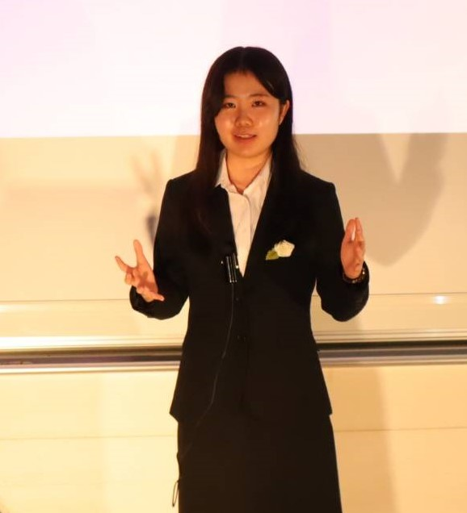

第19回東大杯
東京大学本郷キャンパス 安田講堂
実長より

芦田幸楽
始めまして。第19回東大杯の実行委員長を務めさせていただきます、芦田幸来と申します。当サイトをご覧いただき、どうもありがとうございます。
今年の東大杯のコンセプトは "Kaleidoscope" です。万華鏡を少し回せば全く違う光景を見ることができるように、私たちの周りにいて、同じような生活をしていても、実は全く違う経験や価値観を持っている方々がたくさんいます。その唯一無二の経験をぜひスピーチという形で発表していただきたい、そして個性にあふれたスピーチをできるだけ多くの人々に聞いてほしい、という気持ちでこのコンセプトに決定いたしました。
この東大杯が、自分の気持ちを言葉にしてみる機会になれば幸いです。皆様のご応募を心からお待ちしております。

名手康一郎
第19回東大杯の副実行委員長を務めます、名手康一郎と申します。東大杯に関心をもっていただき、ありがとうございます。みなさんは、英語スピーチにどのような印象を持っていらっしゃいますか？もしかすると、このサイトをご覧になっている方の中には、なじみがなく、少しハードルの高いものと感じている方もいらっしゃるかもしれません。しかし、私たちはそんなあなたにこそ、スピーチの魅力に触れてみてほしいと思っています。私たちはスピーチを「聞く」ことを通して自分の知らない世界に出会うことができます。しかし同時に、スピーチを「発表する」ことを通して知らなかった自分に出会うこともできます。そんなスピーチに触れる最高の機会を用意しております。皆様のご応募、ご来場をお待ちしております。あなたの毎日がちょっぴり変わるかもしれません。
About Us
- 東京大学ESSスピーチセクションとは
- 実績
- 普段の活動
英語スピーチとは
- ソーシャルスピーチ、バリュスピーチ
- 型
- Why you? Why now?